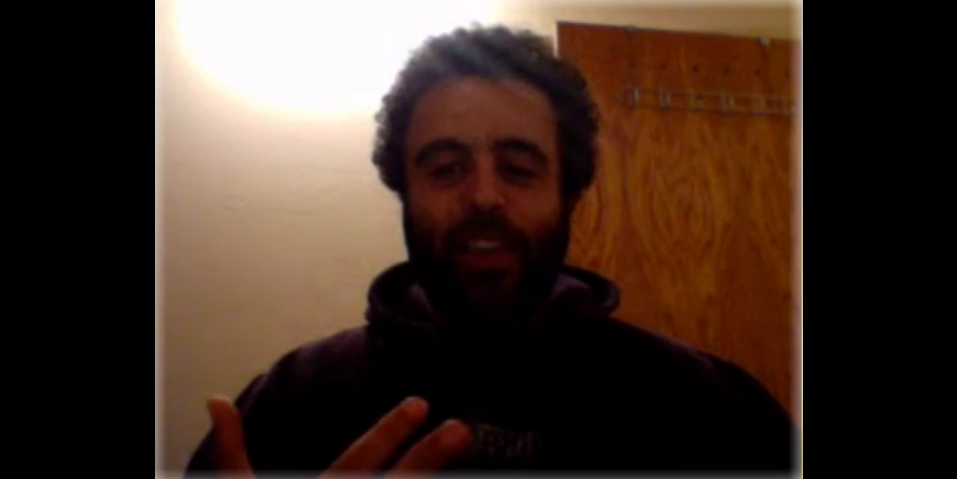

Dev Bootcamp has a very different philosophy than more traditional teaching facilities. The University of California, for example, has been around since 1868. It has its well established, tried-and-true methods. These highly proven methods attract the attention of prospective students worldwide. They pay a fee to open a path, paved long ago, to a brighter future. This is the table/restaurant mindset. There is a bespoke set of benefits that is served in exchange for tuition. DBC is different. It's been around for a few years and the curriculum changes constantly. It is largely, in Shereef's words , "a big experiment." The benefits, so to speak, that we get out of the program are a function of the effort and fervor we put into it. This is the kitchen mindset. We are not here to be presented an education, but to work together to bring it to fruition! I do have some trepidation about this. I may have to reckon with failure and inadequacy. I know that upon graduation, the "dream job" is not guaranteed.
When I decided to quit chemistry for DBC, I was shamed and ridiculed, even by my own family. Everyone insisted that I'd be more successful with a PhD in chemistry than at some "for-profit school." Despite the risks, I believe I have the tenacity to become a greater developer. I will walk in those doors with the resolution to prove to everyone that I have what it takes. I was trained as a scientist after all, so I'm not afraid of an experiment.